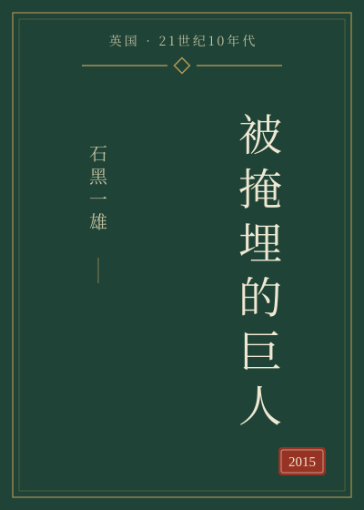
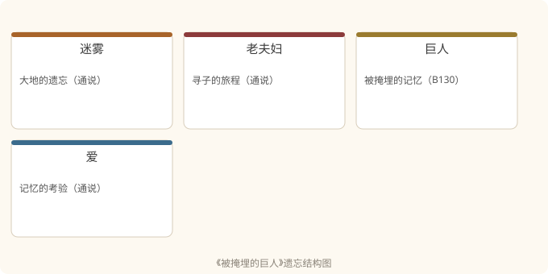

被掩埋的巨人
一、基本信息
| 作者 | 石黑一雄 |
|---|---|
| 成书/出版 | 2015年（Britannica B130：被掩埋的巨人 (2015)——'记忆与遗忘'） Kazuo Ishiguro — Encyclopaedia Britannica（百科全书） |
| 国别/地区 | 英国 |
| 时代 | 现当代 · 21世纪10年代 |
| 体裁 | 长篇小说 |
| 语言 | 英语 |

《被掩埋的巨人》遗忘结构图（主题·结构图）
二、创作背景
Britannica（B130）：《被掩埋的巨人》(2015)——'记忆与遗忘（Britannica 列举）'。
Britannica（B130）：石黑一雄2017诺奖——'uncovered the abyss beneath our illusory sense of connection with the world'；主题'记忆、悔恨、身份'。
题材（通说待核）：后亚瑟王不列颠——'母龙'的气息使大地遗忘。
三、内容脉络
（通说待核——B130未载剧情）老夫妇渡河寻子：集体遗忘之谜。
（通说待核）'巨人的坟墓'：被掩埋的记忆终将醒来。
四、主要人物表
| 人物 | 身份 | 说明 |
|---|---|---|
| 埃克索/比特丽丝 | 老夫妇 | （通说待核，B130未载） |
五、主题与艺术特点
- 记忆与遗忘（B130）。
- 集体创伤的掩埋（通说待核）。
- 爱的考验（书名语境——通说待核）。
六、影响与评论
- Britannica：2017诺奖（B130）。
Kazuo Ishiguro — Encyclopaedia Britannica（百科全书） - Britannica：'记忆、悔恨、身份'主题（B130）。
Kazuo Ishiguro — Encyclopaedia Britannica（百科全书）
七、阅读建议
难点
- 寓言化的中世纪设定。
- 记忆伦理的多重声音。
- 《被掩埋的巨人》中译本（上海译文等——通说待核）。
- 英文原版。
石黑一雄寓言篇；与《克拉拉与太阳》对读。
八、待核实
- 埃克索/比特丽丝人名核对（B130未载）。
- 2015年出版（Faber说）待核。
- '母龙魁瑞格'细节待核。